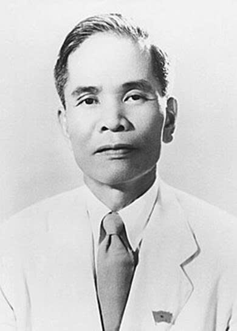
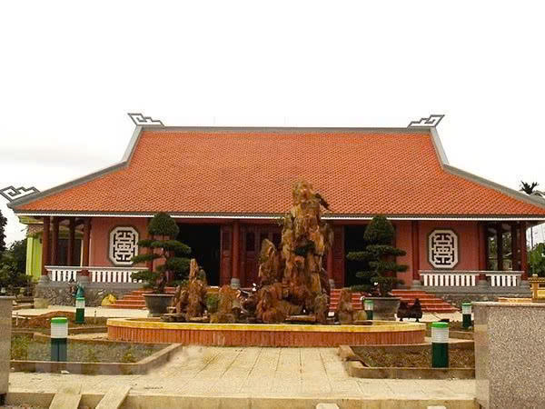
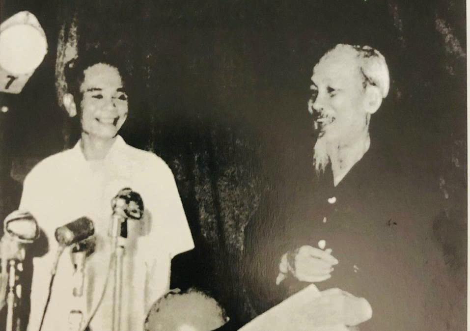
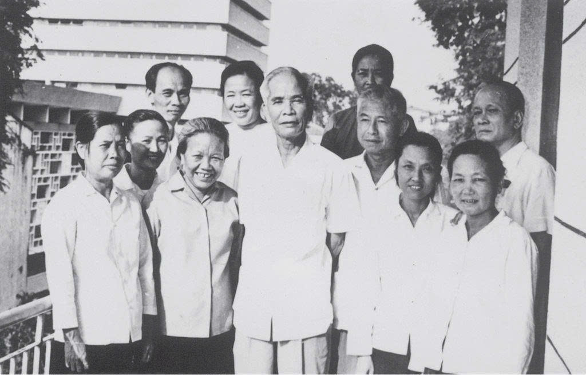
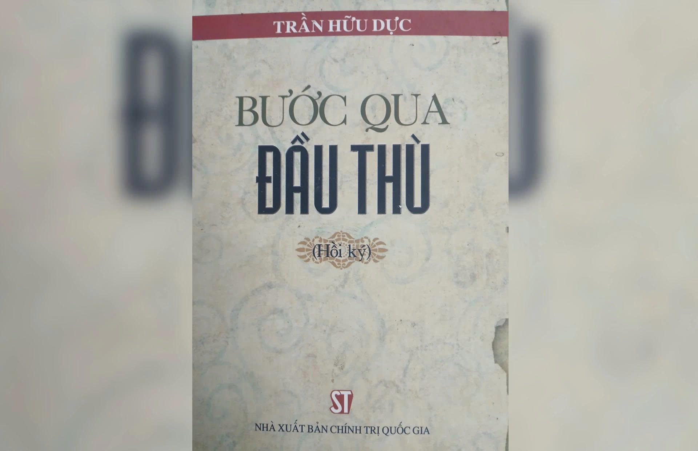

QUẢNG TRỊ · NHÂN VẬT · 1910–1993
Trần Hữu Dực
Cuộc đời & sự nghiệp cách mạng
Đồng chí Trần Hữu Dực (1910–1993), nguyên Ủy viên Ban Chấp hành Trung ương Đảng Cộng sản Việt Nam khóa I, II, III, IV; nguyên Phó Thủ tướng Chính phủ.
Từ quê hương Dương Lệ Đông ở Quảng Trị, ông tham gia hoạt động cách mạng khi mới 15 tuổi, trải qua nhiều nhà tù thực dân, góp phần lãnh đạo khởi nghĩa năm 1945 và đảm nhiệm nhiều cương vị trong Đảng, Chính phủ, Quốc hội.
Nội dung được biên soạn sát theo tài liệu “Đồng chí Trần Hữu Dực (1)” do người dùng cung cấp.

01 · CUỘC ĐỜI
Từ Dương Lệ Đông
Từ Dương Lệ Đông
đến con đường cách mạng
Trần Hữu Dực sinh ngày 15/01/1910, trong một gia đình nông dân nghèo ở làng Dương Lệ Đông, xã Triệu Thuận, huyện Triệu Phong, tỉnh Quảng Trị. Tài liệu cho biết ông nay được xác định quê quán tại xã Triệu Bình.

Lớn lên trên mảnh đất giàu truyền thống cách mạng, từ truyền thống của dân tộc, của gia đình và ảnh hưởng của phong trào yêu nước thời bấy giờ, Trần Hữu Dực đã sớm giác ngộ và tham gia hoạt động cách mạng khi mới 15 tuổi.
Khi 16 tuổi, ông chủ trì Hội nghị thành lập tổ chức yêu nước “Ái hữu dân đoàn”. Tổ chức này tập hợp đông đảo quần chúng nhân dân, tạo ảnh hưởng tích cực và mở đường cho tổ chức Việt Nam thanh niên cách mạng đồng chí hội xâm nhập, lan rộng vào Quảng Trị.
“
Không có tổ chức như cát rời, vô dụng.
02 · DÒNG THỜI GIAN
Những chặng đường
Những chặng đường
của một cuộc đời
Timeline ưu tiên những mốc được nêu rõ trong tài liệu. Với chi tiết tổng quát “4 lần bị Pháp bắt”, trang giữ nguyên thông tin tổng hợp và không tự dựng thêm một ngày tháng mà tài liệu không ghi.
15 tuổi
KHỞI ĐẦU
Sớm giác ngộ và tham gia hoạt động cách mạng
Trần Hữu Dực sớm giác ngộ và tham gia hoạt động cách mạng khi mới 15 tuổi, trong ảnh hưởng của truyền thống dân tộc, gia đình và phong trào yêu nước thời bấy giờ.
16 tuổi
TỔ CHỨC
Chủ trì thành lập “Ái hữu dân đoàn”
Ngay lúc tuổi 16, ông chủ trì Hội nghị thành lập tổ chức yêu nước “Ái hữu dân đoàn”, tập hợp đông đảo quần chúng nhân dân và tạo ảnh hưởng tích cực đối với phong trào cách mạng ở Quảng Trị.
07/1929
BẮT LẦN THỨ NHẤT
Nhà tù Quảng Trị
Ông bị bắt lần thứ nhất và giam ở nhà tù Quảng Trị. Trước các cực hình tra tấn, ông nêu tấm gương kiên cường bất khuất và sau đó được thả.
Đầu 1931
BẮT LẦN THỨ HAI
Từ nhà lao Quảng Trị đến Lao Bảo
Ông bị giam ở nhà lao Quảng Trị cùng một số đảng viên khác, bị tra tấn hơn 4 tuần lễ nhưng chỉ nhận được câu trả lời “không biết, không làm”. Sau đó ông bị đày đi Lao Bảo.
1936
CHUYỂN NHÀ ĐÀY
Từ Lao Bảo đến Buôn Mê Thuột
Từ Lao Bảo, kẻ địch chuyển ông đến nhà đày Buôn Mê Thuột, một trong những nơi giam giữ khắc nghiệt được tài liệu nhắc đến trong câu chuyện này.
09/1941
BẮT LẦN THỨ BA
30 ngày tra tấn và bản án mới
Ông bị bắt tại Ninh Thuận. Kẻ địch tra tấn liên tục trong 30 ngày; ông bị kết án 20 năm tù cộng thêm 4 năm do trốn tù và bị đày đi Buôn Mê Thuột lần thứ hai.
1926–1945
TỔNG QUÁT
4 lần bị Pháp bắt
Tài liệu ghi nhận trong thời gian hoạt động cách mạng từ 1926–1945, Trần Hữu Dực bị Pháp bắt 4 lần; chính quyền Nam triều kết án tổng số 29 năm tù giam và 22 năm quản thúc. Văn bản được cung cấp không ghi cụ thể thời điểm lần bắt thứ tư.
Tết 1944
TRONG NHÀ ĐÀY
Duyệt binh, chào cờ Tổ quốc
Sáng mồng một Tết Âm lịch năm 1944, các chiến sĩ cộng sản bị giam cầm tổ chức cuộc duyệt binh, chào cờ Tổ quốc ngay trong nhà đày Buôn Mê Thuột; Trần Hữu Dực cùng các đồng chí tổ chức sự kiện với sự tham gia của hàng trăm tù nhân.
06/1945
THOÁT TÙ
Thoát khỏi nhà tù đế quốc
Tháng 6/1945, Trần Hữu Dực thoát khỏi nhà tù đế quốc và không một phút nghỉ ngơi, ông lao ngay vào công việc chuẩn bị khởi nghĩa giành chính quyền ở Quảng Trị.
31/8/1945
LÃNH ĐẠO
Thường vụ Xứ ủy Trung Kỳ
Cùng tập thể Ủy ban khởi nghĩa do ông làm Chủ tịch, Trần Hữu Dực lãnh đạo thành công cuộc khởi nghĩa Quảng Trị nhanh gọn. Ngày 31/8/1945, ông được bầu vào Thường vụ Xứ ủy Trung Kỳ của Đảng.
02/9/1945
CHÍNH QUYỀN MỚI
Chủ tịch UBND cách mạng Trung bộ
Trong cuộc họp các đại biểu các tỉnh Trung Kỳ, ngày 02/9/1945, ông được bầu là Chủ tịch UBND cách mạng Trung bộ.
Từ 09/1945
XÂY DỰNG CHÍNH QUYỀN
Xây dựng và củng cố chính quyền mới
Từ tháng 9/1945, Trần Hữu Dực cùng các đồng chí của mình xây dựng và củng cố chính quyền mới ở các tỉnh Trung Bộ.
Giữa 1948
VIỆT BẮC
Đảm nhận công tác tại cơ quan Trung ương
Giữa năm 1948, ông được Trung ương Đảng và Chính phủ điều ra Việt Bắc, từ đó đảm nhận chức Ủy viên Đảng đoàn Chính phủ và Bí thư đầu tiên của Liên Chi ủy cơ quan Trung ương.
1950
HẬU CẦN
Phó Chủ nhiệm Tổng cục Cung cấp
Chủ tịch Hồ Chí Minh ký bổ nhiệm ông giữ chức Phó Chủ nhiệm Tổng cục Cung cấp Quân đội Nhân dân Việt Nam, nay là Tổng cục Hậu cần. Ông tham gia các chiến dịch Trần Hưng Đạo, Hoàng Hoa Thám và Hà Nam Ninh.
1954
ĐIỆN BIÊN
Chỉ đạo bảo đảm hậu cần cho Chiến dịch Điện Biên
Tài liệu ghi nhận Trần Hữu Dực chỉ đạo đảm bảo hậu cần cho Chiến dịch Điện Biên năm 1954.
1972–1973
TRỊ THIÊN
Bí thư Khu ủy Trị Thiên tại chiến trường
Giữa lúc cuộc kháng chiến chống Mỹ cứu nước diễn ra rất ác liệt, Trần Hữu Dực được bí mật cử vào chiến trường Trị Thiên, giữ chức Bí thư Khu ủy Trị Thiên.
21/8/1993
KẾT THÚC CUỘC ĐỜI
Ông mất ở tuổi 83
Gần 4 thập kỷ làm việc ở Trung ương, Trần Hữu Dực đảm nhiệm nhiều vị trí quan trọng của Đảng, Chính phủ và Quốc hội. Ông mất ngày 21/8/1993.
03 · NHÀ TÙ
Những năm tháng
Những năm tháng
trong lao tù
Tài liệu dành một phần đáng kể để kể lại những năm tháng trong nhà tù và nhà đày, nơi Trần Hữu Dực nhiều lần bị bắt, bị tra tấn và bị đày đi Lao Bảo, Buôn Mê Thuột.

Quảng Trị
Tháng 7/1929, ông bị bắt lần thứ nhất và giam ở nhà tù Quảng Trị.
Lao Bảo
Đầu năm 1931, sau thời gian bị tra tấn ở nhà lao Quảng Trị, ông bị đày đi nhà đày Lao Bảo.
Buôn Mê Thuột
Năm 1936 ông được chuyển đến Buôn Mê Thuột; sau lần bắt tại Ninh Thuận năm 1941, ông lại bị đày đi Buôn Mê Thuột lần thứ hai.
Tổ chức trong tù
Dù ở nhà lao nào, tài liệu ghi nhận ông luôn là nòng cốt lãnh đạo tổ chức ở trong tù để củng cố tinh thần đấu tranh của các đồng chí mình.
04 · BƯỚC NGOẶT 1945
Thoát tù và
Thoát tù và
lãnh đạo khởi nghĩa
Tháng 6/1945, ông thoát khỏi nhà tù đế quốc và ngay lập tức tham gia chuẩn bị khởi nghĩa giành chính quyền ở Quảng Trị. Sau đó là các nhiệm vụ trong bộ máy chính quyền cách mạng mới ở Trung Bộ.
Thoát khỏi nhà tù đế quốc
Không một phút nghỉ ngơi, ông lao ngay vào công việc chuẩn bị khởi nghĩa giành chính quyền ở Quảng Trị.
Thường vụ Xứ ủy Trung Kỳ
Ông được bầu vào Thường vụ Xứ ủy Trung Kỳ của Đảng.
Chủ tịch UBND cách mạng Trung bộ
Trong cuộc họp các đại biểu các tỉnh Trung Kỳ, ông được bầu là Chủ tịch UBND cách mạng Trung bộ.
Xây dựng và củng cố chính quyền mới
Ông cùng các đồng chí xây dựng và củng cố chính quyền mới ở các tỉnh Trung Bộ.
05 · SỰ NGHIỆP
Gần bốn thập kỷ
Gần bốn thập kỷ
công tác ở Trung ương
Gần 4 thập kỷ làm việc ở Trung ương, Trần Hữu Dực là Ủy viên Ban Chấp hành Trung ương khóa I, II, III và IV, đồng thời đảm nhiệm nhiều vị trí quan trọng của Đảng, Chính phủ, Quốc hội.
Ủy viên BCH Trung ương
Khóa I, II, III và IV.
Phó Chủ nhiệm Ủy ban Kế hoạch Nhà nước
Một trong các vị trí quan trọng được tài liệu liệt kê.
Trưởng ban Công tác Nông thôn của Đảng
Một cương vị trong quá trình công tác ở Trung ương.
Bộ trưởng Bộ Nông trường
Một trong các chức vụ được tài liệu ghi nhận.
Bộ trưởng Phủ Thủ tướng
Một vị trí trong chuỗi công tác của ông.
Phó Thủ tướng Chính phủ
Chức vụ được nêu ở phần giới thiệu của tài liệu.
Viện trưởng Viện Kiểm sát Nhân dân tối cao
Một cương vị quan trọng trong quá trình công tác.
Đại biểu Quốc hội khóa I–VII
41 năm theo tư liệu được cung cấp.
1948Điều ra Việt Bắc, công tác tại cơ quan Trung ương
1950–1954Phó Chủ nhiệm Tổng cục Cung cấp và công tác hậu cần
1972–1973Bí thư Khu ủy Trị Thiên tại chiến trường
06 · CON NGƯỜI
Tinh thần trách nhiệm
Tinh thần trách nhiệm
và cách sống
Tài liệu nhận xét rằng ở bất kỳ cương vị nào, ông luôn nêu cao tinh thần trách nhiệm, hết lòng phục vụ nhân dân, phục vụ Tổ quốc và nêu tấm gương cần kiệm, liêm chính.
“
Đồng chí Trần Hữu Dực là một đảng viên Cộng sản hết lòng phục vụ nhân dân, phục vụ Tổ quốc.
Nhận xét của Đại tướng Võ Nguyên Giáp được dẫn lại trong tài liệu.
07 · TƯ LIỆU ẢNH
Năm hình ảnh
Năm hình ảnh
và những lớp ký ức
Các hình ảnh được người dùng cung cấp kèm yêu cầu thiết kế trang. Hồi ký được đưa xuống phần cuối của câu chuyện; ở đây chỉ giới thiệu tư liệu hình ảnh như một phần của ký ức nhân vật.

Khoảnh khắc cùng đồng chí
Ảnh tư liệu tập thể được cung cấp.
Chân dung
Hình ảnh chân dung được cung cấp.
Khung hình lịch sử
Một ảnh tư liệu đen trắng trong bộ hình.
Không gian quê hương
Hình ảnh màu được đưa vào như một lớp tư liệu về không gian quê hương.

Cuốn hồi ký
Một tư liệu được đặt ở cuối trang vì hồi ký chỉ là một phần trong câu chuyện về cuộc đời ông.
08 · HỒI KÝ
“Bước qua đầu thù”
“Bước qua đầu thù”
— một phần tư liệu
Hồi ký không phải chủ đề chính của trang. Tài liệu cho biết đêm 19/8/1993, trên bàn làm việc của Trần Hữu Dực là những trang cuối cùng của tập hồi ký “Bước qua đầu thù”, ông vừa kịp để lại cho bạn bè, đồng chí và các thế hệ mai sau.
Trong phần nói về những năm tháng ở nhà tù, tài liệu dẫn lại câu nói:
“Đối với địch, nhất thiết chúng ta phải bước qua đầu chúng. Nếu không, chúng sẽ bước qua đầu ta”.
Đây là tư liệu giúp kết nối một phần ký ức cá nhân với những trải nghiệm trong cuộc đời hoạt động cách mạng của ông.
09 · GHI NHỚ
Ba câu được tài liệu
Ba câu được tài liệu
giữ lại
Phần cuối tài liệu nêu một câu nói nổi tiếng, gắn với hình dung về những điều kiện để xây dựng lý tưởng Cộng sản:
“Của cải như không khí
Cảnh vật như thần tiên
Con người như thánh hiền
Mới xây dựng được lý tưởng Cộng sản”
(Xem hồi ký “Bước qua đầu thù” của Trần Hữu Dực).10 · GHI NHỚThử thách
Thử thách
60 giây
5 câu hỏi ngắn, dựa trên nội dung tài liệu được cung cấp.
01 / 05TRẦN HỮU DỰC